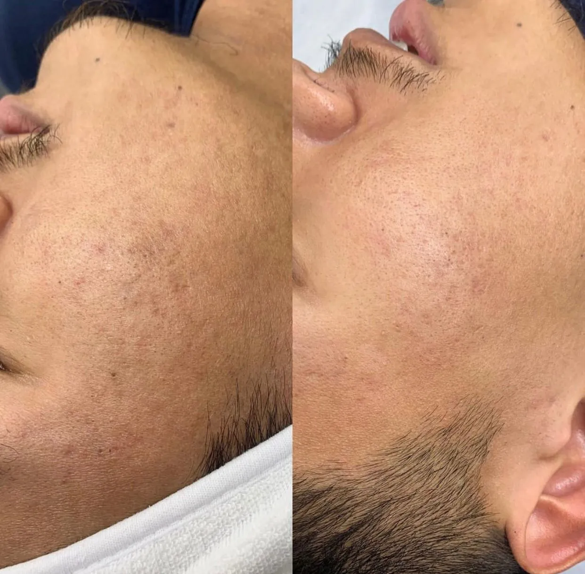

Recanto da Beleza
Microagulhamento
, o que é?
O microagulhamento é um procedimento estético que por meio de várias agulhas aumenta a vasodilatação e estimula a produção de colágeno.
Benefícios
do microagulhamento
Indicado para diminuir manchas, rugas, das linhas de expressão, promovendo o rejuvenescimento facial e clareamento da pele.
